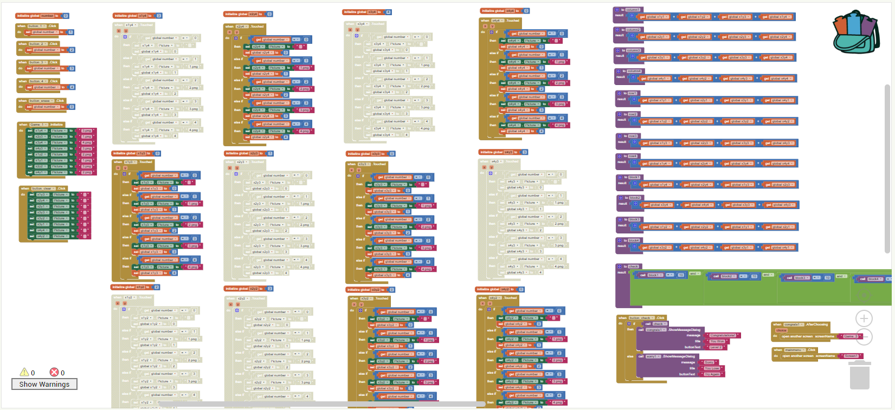
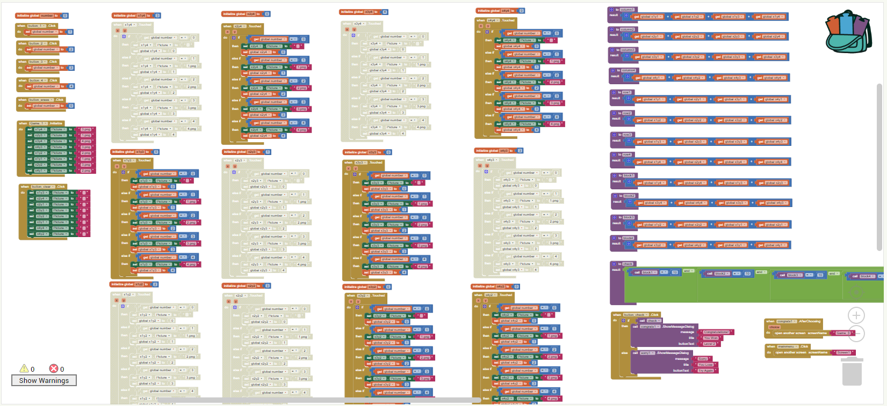
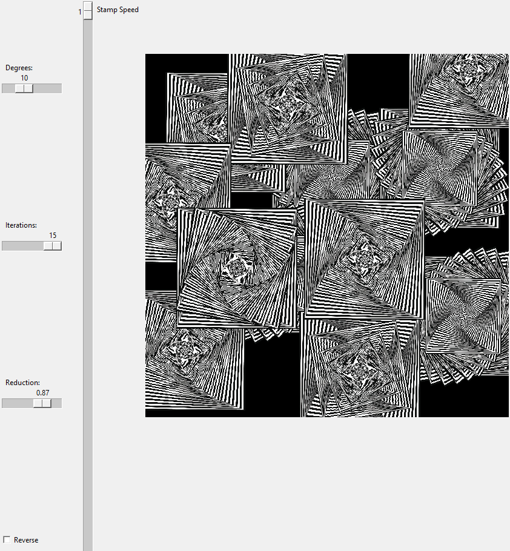
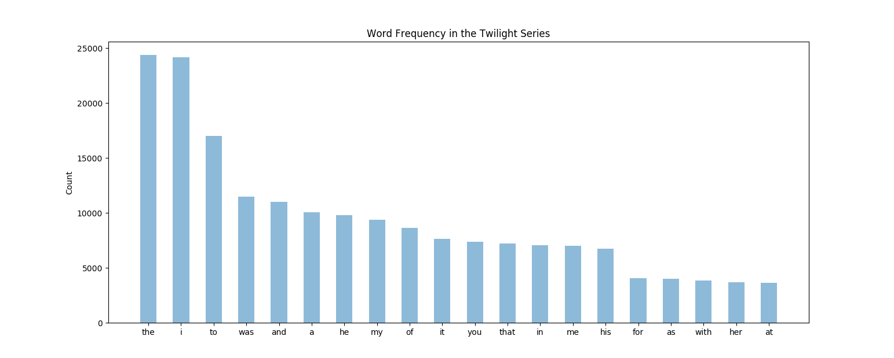
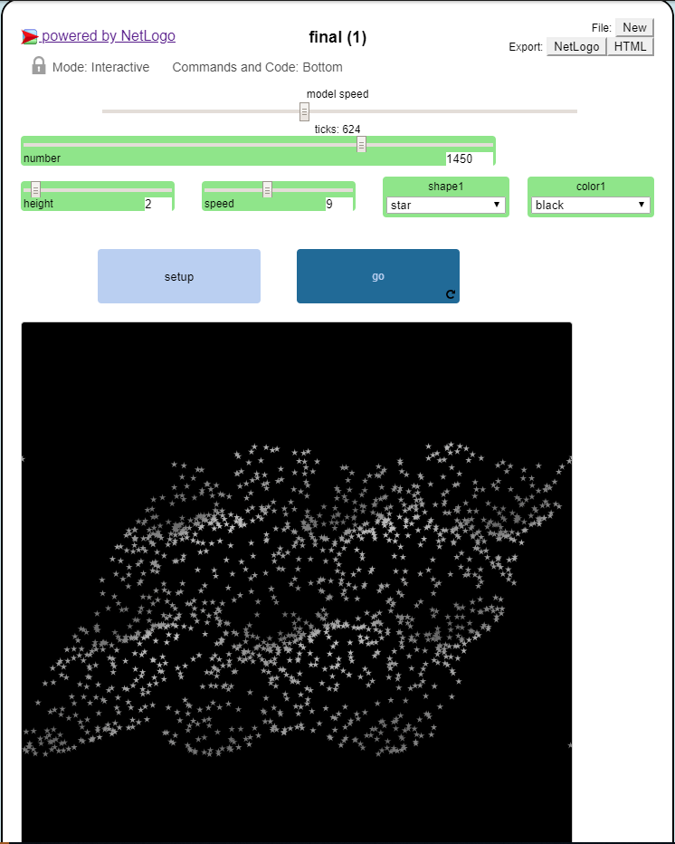
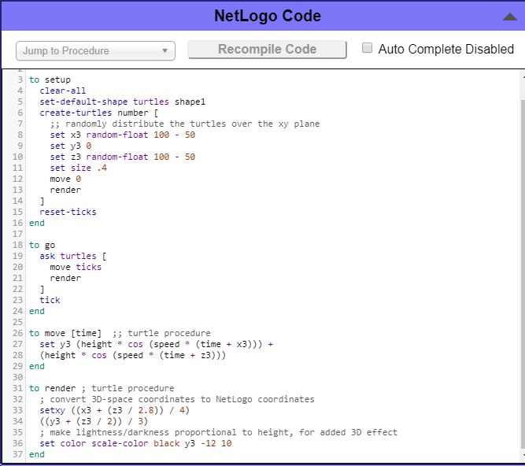

Bryan Sperry
This is a Scratch Game I made called food fight. Use the arrow keys and WASD to move the characters and space/0 to throw food.
 

We made a Sudoku game in MIT App Inventor. There are two levels of different difficulties and an Instructions screen. The app uses touchscreen technology to work.
Try our Interactive fiction made using Python! It's a story about a seahorse and a kangaroo based on the voyage and return plot. Try to survive till the happy ending!
Try our Roman Numeral Converter made using Python! It can convert to and from Roman Numerals for any number less than 4,000. Have Fun!
This is an image I manipulated in Python so that there would be Emilia Clarke pointing to an underwater nun and laughing. I also flipped it.
This is a GUI we created in Python. You can control the amount it rotates how much smaller it gets each time, and some other things.
This is a graph that shows the frequency of words in arguably the worst book series ever, Twilight.
This is some code I modified in netlogo to do stuff.